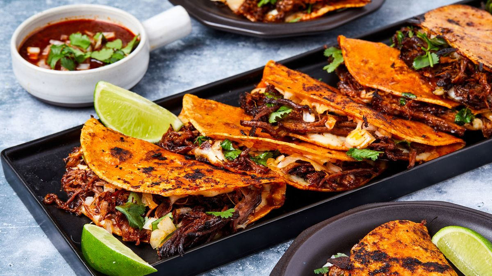

Birria de Res Tacos

The cheesiest and most flavorful birria tacos you will ever have!
This homemade recipe will be sure to satiate your hunger for tacos. With these simple instructions to follow, anyone and everyone will be able to cook this delicious meal.
Ingredients
- Dried chile peppers
- Beef
- Seasonings: salt, pepper,fresh garlic, whole cloves, cinnamon, cumin, thyme, marjoram, oregano
- Olive oil
- Tomatoes
- Vinegar
- Tortillas
- Onion and cilantro
Steps
- Boil the dried peppers for 5 minutes, then remove from heat and let the peppers soak until the water is cool. Drain, reserving some water.
- Season the beef and sear on all sides in oil in a Dutch oven.
- Grill the tomatoes until the skin is blistered and begins to peel.
- Blend the soaked chili peppers with the reserved chile water, tomatoes, vinegar, and seasonings.
- Strain the sauce and pour over the meat. Cover the Dutch oven and cook until the meat begins to fall apart, basting often. Allow the meat to rest, then shred.
- Warm the tortillas on the griddle. Fill each tortilla with meat, onions, and cilantro.